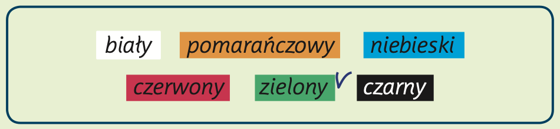
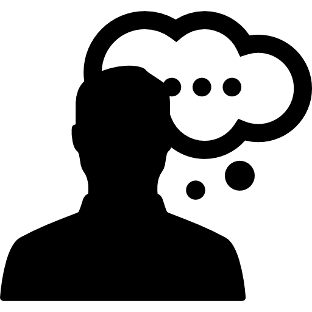
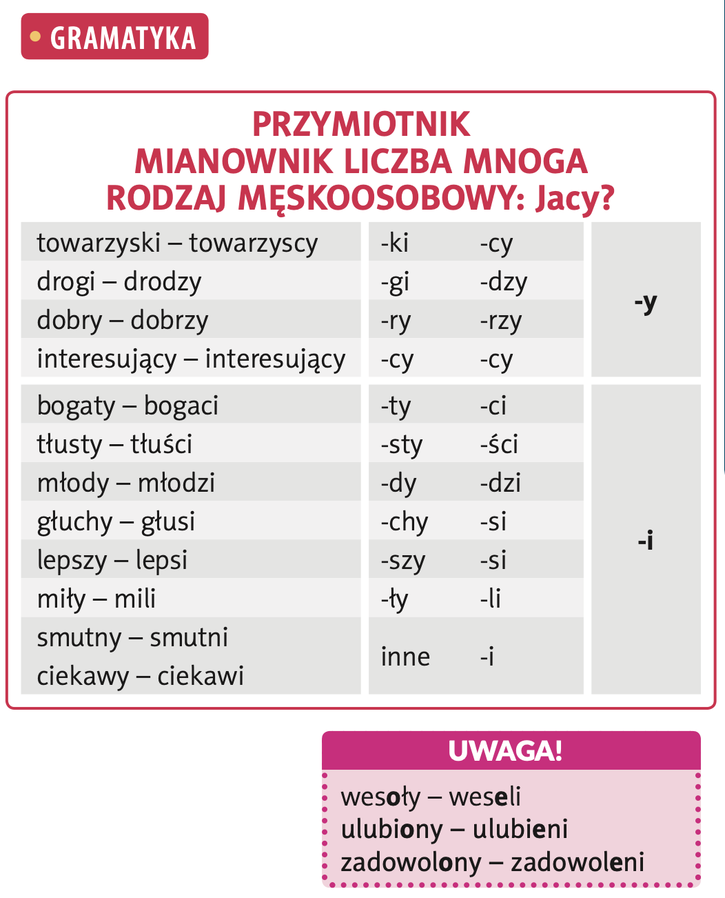
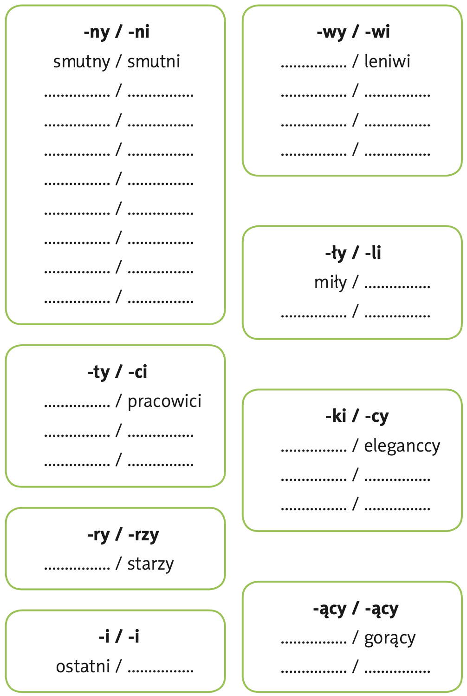
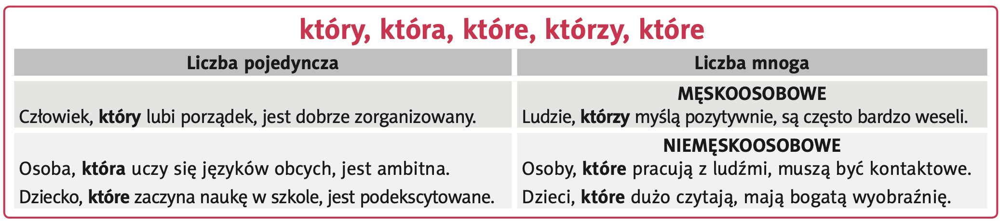

Masz w szafie siedem białych bluzek? Lubisz czerwone buty? Właśnie kupiłaś następny czarny sweterek? Nasi specjaliści udowodnili, że pewne cechy charakteru decydują o tym, jaki lubimy kolor. Chcesz wiedzieć jaka jesteś naprawdę? Oto rezultaty badań:
Hura po Polsku - 2
Temat 1 - Osobowość
Lekcja 03 - PRZYMIOTNIK MIANOWNIK LICZBA MNOGA RODZAJ MĘSKOOSOBOWY: Jacy?
- Повторять правила образования форм прилагательных во множественном числе.
- Упражняться в построении сложноподчинённых предложений с относительными местоимениями (który / która / które / którzy).
- Практиковать использование спрягаемых спрягаемых слов-союзов (i, a, ale, albo).
Słownictwo nowe >>
irytujący - траздражающий
zarozumiały - высокомерный
niechętne rozmawia - неохотно разговаривает
kontrowersyjny - противоречивый
 3_A - Proszę przeczytać
tekst, a następnie zdecydować, o jakich kolorach mówią specjaliści. Czy uważa Pan / Pani, że
rezultaty tych badań są prawdziwe? Proszę wyrazić swoją opinię na ten temat.
3_A - Proszę przeczytać
tekst, a następnie zdecydować, o jakich kolorach mówią specjaliści. Czy uważa Pan / Pani, że
rezultaty tych badań są prawdziwe? Proszę wyrazić swoją opinię na ten temat.

Powiedz mi, jaki lubisz kolor - a powiem ci, kim jesteś!
1. ................................ Lubią go ludzie dynamiczni, pewni siebie i otwarci. Zawsze chcą dominować i kontrolować sytuację. Lubią być w centrum zainteresowania. Mogą mieć tendencję do manipulowania innymi ludźmi. Bywają agresywni i niewrażliwi.
2. ................................ Wybierają go ludzie spokojni, ambitni i pracowici. Chcą osiągać sukcesy w pracy. Są bardzo dobrze zorganizowani, dokładni i punktualni, ale niezbyt spontaniczni. Bywają nudni i nietowarzyscy.
3. zielony Lubią go ludzie towarzyscy, weseli i spontaniczni. Mają dużo przyjaciół. Kochają życie i ludzi. Są otwarci na świat i tolerancyjni. Bywają leniwi i nerwowi.
4. ................................ Kochają go ludzie wrażliwi, często zamknięci w sobie. Nie są praktyczni, - kle mają dobry gust. Bywają nieśmiali i niezdecydowani.
5. ................................ Wybierają go ludzie niezależni i energiczni. Są bardzo romantyczni, kochają muzykę i piękne pejzaże, lubią zwierzęta. Są bardzo krytyczni. Bywają smutni i depresyjni. Często są samotni.
6. ................................ Uwielbiają go ludzie odważni, zdecydowani i pełni życia. Są bardzo oryginalni. Zawsze osiągają swój cel. Są ciekawi świata i chętnie podróżują. Bywają ekscentryczni i aroganccy. Ale zawsze interesujący.
A jacy ludzie lubią kolor szary?
Odpowiedź
- czerwony (красный)
- dynamiczny, pewny siebie, otwarty, dominujący, agresywny, niewrażliwy
- niebieski (синий)
- spokojny, ambitny, pracowity, zorganizowany, punktualny, dokładny, nudny, nietowarzyski
- zielony (зелёный)
- towarzyski, wesoły, spontaniczny, otwarty, tolerancyjny, leniwy, nerwowy
- fioletowy (фиолетовый)
- wrażliwy, zamknięty w sobie, niepraktyczny, mający dobry gust, nieśmiały, niezdecydowany
- różowy (розовый)
- niezależny, energiczny, romantyczny, krytyczny, smutny, depresyjny, samotny
- pomarańczowy (оранжевый)
- odważny, zdecydowany, pełen życia, oryginalny, ciekawy świata, podróżnik, ekscentryczny, arogancki, interesujący
 Gramatyka

Odpowiedź
- czerwony (красный)
- dynamiczny, pewny siebie, otwarty, dominujący, agresywny, niewrażliwy
- niebieski (синий)
- spokojny, ambitny, pracowity, zorganizowany, punktualny, dokładny, nudny, nietowarzyski
- zielony (зелёный)
- towarzyski, wesoły, spontaniczny, otwarty, tolerancyjny, leniwy, nerwowy
- fioletowy (фиолетовый)
- wrażliwy, zamknięty w sobie, niepraktyczny, mający dobry gust, nieśmiały, niezdecydowany
- różowy (розовый)
- niezależny, energiczny, romantyczny, krytyczny, smutny, depresyjny, samotny
- pomarańczowy (оранжевый)
- odważny, zdecydowany, pełen życia, oryginalny, ciekawy świata, podróżnik, ekscentryczny, arogancki, interesujący
 3_B - Proszę poszukać w tekście odpowiednich
przymiotników i uzupełnić tabelę.
3_B - Proszę poszukać w tekście odpowiednich
przymiotników i uzupełnić tabelę.

Odpowiedź
- -ny -> -ni
- smutny → smutni
- poważny → poważni
- ostatni → ostatni (форма не меняется)
- -ty -> -ci
- pracowity → pracowici
- błyskotliwy → błyskotliwi
- krótki → krótcy
- -ry -> -rzy
- stary → starzy
- szary → szarzy
- bogaty → bogaci
- -ły → -li
- miły → mili
- młody → młodzi
- wesoły → weseli
- -wy → -wi
- leniwy → leniwi
- łatwy → łatwi
- drzewiasty → drzewiści (пример редкой формы)
- -ki → -cy
- elegancki → eleganccy
- towarzyski → towarzyscy
- człowieczki → człowieccy (редкий пример)
Формы без изменений (не все прилагательные изменяются):
- ostatni → ostatni
- gorący → gorący
- pewny → pewni

3_C - Proszę zbudować zdania według podanego
wzoru, używając brakujących słów: który, która, które, którzy:
- ambitny, człowiek, jest, lubi, pracować . => Człowiek, k tóry jest ambitny, lubi pracować.
- ludzie, są, otwarci, nowe, lubią, sytuacje . ............................................................................................................ .
- osoba, odważna, jest, boi się, nie, wyzwań, nowych . .......................................................................................... .
- charyzmatyczna, jest, ma, silny, osoba, charakter ................................................................................................ .
- poważni, poważnie, traktują, ludzie, innych, są ..................................................................................................... .
- ludzie, mają, zdanie, niezależni, są, własne . ........................................................................................................ .
- kontakty, nowe, człowiek, lubi, jest, towarzyski . ................................................................................................... .
- mężczyźni, pracują, są, eleganccy, ze mną . ......................................................................................................... .
- zajęte, kobiety, pracują, studiują, i, są, bardzo . ..................................................................................................... .
- obrazy, oglądamy, bezcenne, w muzeum, są . ....................................................................................................... .
- drzewa, tysiąc lat, mają, są, stare, bardzo . ......................................................................................................... .
Odpowiedź
- Ludzie, którzy są otwarci, lubią nowe sytuacje.
- Osoba, która jest odważna, nie boi się nowych wyzwań.
- Osoba, która jest charyzmatyczna, ma silny charakter.
- Ludzie, którzy są poważni, traktują innych poważnie.
- Ludzie, którzy są niezależni, mają własne zdanie.
- Człowiek, który jest towarzyski, lubi nowe kontakty.
- Mężczyźni, którzy ze mną pracują, są eleganccy.
- Kobiety, które pracują i studiują, są bardzo zajęte.
- Obrazy, które oglądamy w muzeum, są bezcenne.
- Drzewa, które mają tysiąc lat, są bardzo stare.
3_d - Zgadzam się / Nie zgadzam się.
(Согласен / не согласен)
- Człowiek, który jest ambitny, dużo pracuje. => Z / N
- Człowiek, który jest wrażliwy, nie lubi ludzi. => Z / N
- Ludzie, którzy są otwarci, chętnie poznają nowe miejsca. => Z / N
- Osoba, która jest roztargniona, zawsze ma porządek. => Z / N
- Ludzie, którzy są towarzyscy, lubią spotykać się ze znajomymi. => Z / N
- Kobiety, które pracują na menedżerskich stanowiskach, to w moim kraju rzadkość. => Z / N
- Mężczyźni, którzy lubią szybkie samochody, są odważni. => Z / N
- Ludzie zdecydowani szybko podejmują decyzje. => Z / N
Odpowiedź
- Człowiek, który jest wrażliwy, nie lubi ludzi. ⇒ N
- Ludzie, którzy są otwarci, chętnie poznają nowe miejsca. ⇒ Z
- Osoba, która jest roztargniona, zawsze ma porządek. ⇒ N
- Ludzie, którzy są towarzyscy, lubią spotykać się ze znajomymi. ⇒ Z
- Kobiety, które pracują na menedżerskich stanowiskach, to w moim kraju rzadkość. ⇒ N
- Mężczyźni, którzy lubią szybkie samochody, są odważni. ⇒ N
- Ludzie zdecydowani szybko podejmują decyzje. ⇒ Z
3_e - Ortografia - Dyktando. Proszę posłu-
chać tekstu.
Odpowiedź
Dla mnie autorytet jest człowiek, który ma silny charakter. Ludzie zdecydowani, tak samo jak pracowici, to najczęściej ludzie sukcesu. Myślę, że autorytet to taka osoba wrażliwa i odważna. Czy musi być romantyczna? To ciekawe pytanie.
3_f - Gramatyka - Proszę uzupełnić zdania za pomocą spójników. (i, a, ale, albo)
Союзы.
- i — «и» (сложение, последовательность)
- a — «а» (слабое противительное значение)
- ale - «но» (противительное значение, сильнее «a»)
- albo — «или» (альтернатива)
- bo — «потому что» (иногда уместно вместо союзов i/a/ale)
0. Ludzie popularni mają dużo pieniędzy, ale nie mają czasu.
- Wieczorem pójdę do kina .................. na koncert.
- Lubię słuchać muzyki, .................. nigdy nie chodzę na koncerty.
- Wieczorem zjem kolację, .................. potem pójdę do kina.
- Dzisiaj wieczorem zostanę w domu. Najpierw zjem kolację, .................. potem posłucham muzyki.
- Dzisiaj wieczorem zostanę w domu. Zjem kolację .................. posłucham muzyki.
- Ludzie mediów są popularni, .................. nie zawsze bywają sympatyczni.
- Ludzie mediów są popularni .................. często bywają autorytetem dla widzów.
- Pojadę na wakacje na Mazury .................. nad morze.
- W lipcu pojadę nad morze, .................. w sierpniu pojadę na tydzień w góry.
- W tym roku nie pojadę na wakacje. Zostanę w domu .................. będę się uczyć do egzaminu.
Odpowiedź
- Wieczorem pójdę do kina albo na koncert.
- Lubię słuchać muzyki, ale nigdy nie chodzę na koncerty.
- Wieczorem zjem kolację, a potem pójdę do kina.
- Dzisiaj wieczorem zostanę w domu. Najpierw zjem kolację, a potem posłucham muzyki.
- Dzisiaj wieczorem zostanę w domu. Zjem kolację i posłucham muzyki.
- Ludzie mediów są popularni, ale nie zawsze bywają sympatyczni.
- Ludzie mediów są popularni i często bywają autorytetem dla widzów.
- Pojadę na wakacje na Mazury albo nad morze.
- W lipcu pojadę nad morze, a w sierpniu pojadę na tydzień w góry.
- W tym roku nie pojadę na wakacje. Zostanę w domu i będę się uczyć do egzaminu.